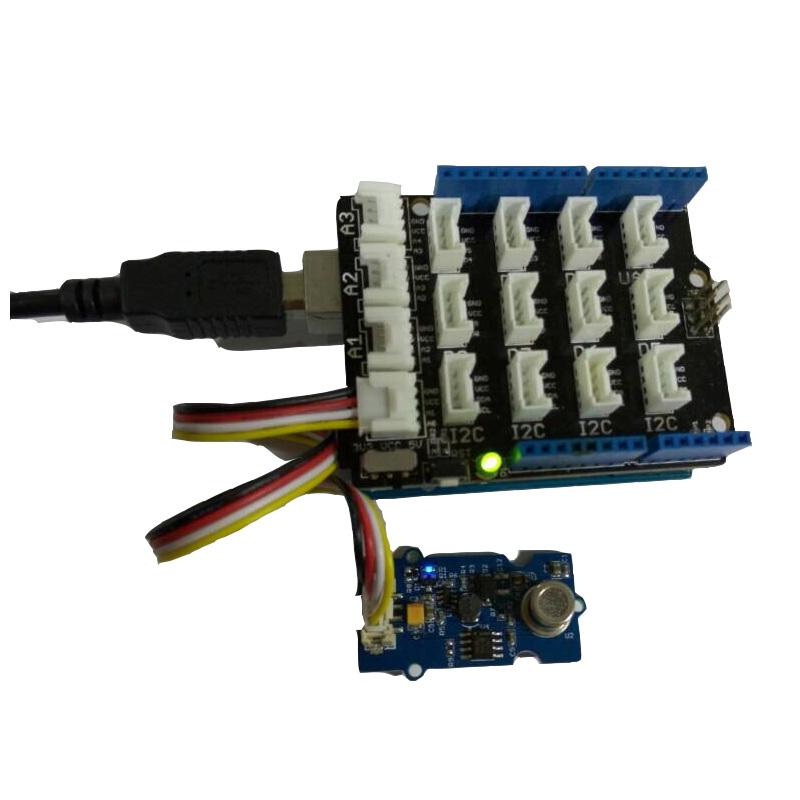

This sensor is designed for comprehensive monitor over indoor air condition. It's responsive to a wide scope of harmful gases, as carbon monixide, alcohol, acetone, thinner, formaldehyde and so on. Due to the measuring mechanism, this sensor can not output specific data to describe target gases' concentrations quantitatively. But it's still competent enough to be used in applications that require only qualitative results, like auto refresher sprayers and auto air cycling systems.

Il convient de sécuriser les prouctions dans une armoire forte ignifuge blindée (Computer translation: Safe and strong cabinet: It should secure product in a strong armored fireproof cabinet, spam in french?)
As described in Introduction, this sensor does better in providing qualitative results over a wide scope of target gases. In this demo, we define 4 statuses for reference in the .cpp file. They are:
We encapsulated the decision structure in a .cpp file. You can find info in there on how to modify the thresholds.
Let's try it out!
1. Connect the Sensor to A0 port of Grove - Base Shield.

2. Download the File :AirQuality_Sensor Library.
3. Wait at least 2 minutes after powering on for heat-up of the sensor. Then open the example below by the path: File -> Example ->AirQuality_Sensor->AirQuality_Sensor.
/*
AirQuality Demo V1.0.
connect to A1 to start testing. it will needs about 20s to start
* By: http://www.seeedstudio.com
*/
#include "AirQuality.h"
#include "Arduino.h"
AirQuality airqualitysensor;
int current_quality =-1;
void setup()
{
Serial.begin(9600);
airqualitysensor.init(14);
}
void loop()
{
current_quality=airqualitysensor.slope();
if (current_quality >= 0)// if a valid data returned.
{
if (current_quality==0)
Serial.println("High pollution! Force signal active");
else if (current_quality==1)
Serial.println("High pollution!");
else if (current_quality==2)
Serial.println("Low pollution!");
else if (current_quality ==3)
Serial.println("Fresh air");
}
}
ISR(TIMER2_OVF_vect)
{
if(airqualitysensor.counter==122)//set 2 seconds as a detected duty
{
airqualitysensor.last_vol=airqualitysensor.first_vol;
airqualitysensor.first_vol=analogRead(A0); // change this value if you use another A port
airqualitysensor.counter=0;
airqualitysensor.timer_index=1;
PORTB=PORTB^0x20;
}
else
{
airqualitysensor.counter++;
}
}
4. Upload the code. Please click here if you do not know how to upload it.
5. Open serial monitor.
To adjust the thresholds and indicating messages, refer to the decision structure below in the .cpp file.
int AirQuality::slope(void)
{
while(timer_index)
{
if(first_vol-last_vol>400||first_vol>700)
{
Serial.println("High pollution! Force signal active.");
timer_index=0;
avg_voltage();
return 0;
}
else if((first_vol-last_vol>400&&first_vol<700)||first_vol-vol_standard>150)
{
Serial.print("sensor_value:");
Serial.print(first_vol);
Serial.println("\t High pollution!");
timer_index=0;
avg_voltage();
return 1;
}
else if((first_vol-last_vol>200&&first_vol<700)||first_vol-vol_standard>50)
{
//Serial.println(first_vol-last_vol);
Serial.print("sensor_value:");
Serial.print(first_vol);
Serial.println("\t Low pollution!");
timer_index=0;
avg_voltage();
return 2;
}
else
{
avg_voltage();
Serial.print("sensor_value:");
Serial.print(first_vol);
Serial.println("\t Air fresh");
timer_index=0;
return 3;
}
}
return -1;
}1.You should have got a raspberry pi and a grovepi or grovepi+.
2.You should have completed configuring the development enviroment, otherwise follow here.
3.Connection
4.Navigate to the demos' directory:
cd yourpath/GrovePi/Software/Python/
nano grove_air_quality_sensor.py # "Ctrl+x" to exit #
import time
import grovepi
# Connect the Grove Air Quality Sensor to analog port A0
# SIG,NC,VCC,GND
air_sensor = 0
grovepi.pinMode(air_sensor,"INPUT")
while True:
try:
# Get sensor value
sensor_value = grovepi.analogRead(air_sensor)
if sensor_value > 700:
print "High pollution"
elif sensor_value > 300:
print "Low pollution"
else:
print "Air fresh"
print "sensor_value =", sensor_value
time.sleep(.5)
except IOError:
print "Error"
5.Run the demo.
sudo python grove_air_quality_sensor.py
AirQuality Sensor Library.zip
Grove_-_Air_quality_sensor_v1.3_sch_pcb.zip
Grove_-_Air_quality_sensor_v1.3_sch.pdf
Air_quality_sensor_MP503_Chinese.pdf
Air_quality sensor_MP503_English.pdf
If you have questions or other better design ideas, you can go to our forum or wish to discuss.
Copyright (c) 2008-2016 Seeed Development Limited (www.seeedstudio.com / www.seeed.cc)